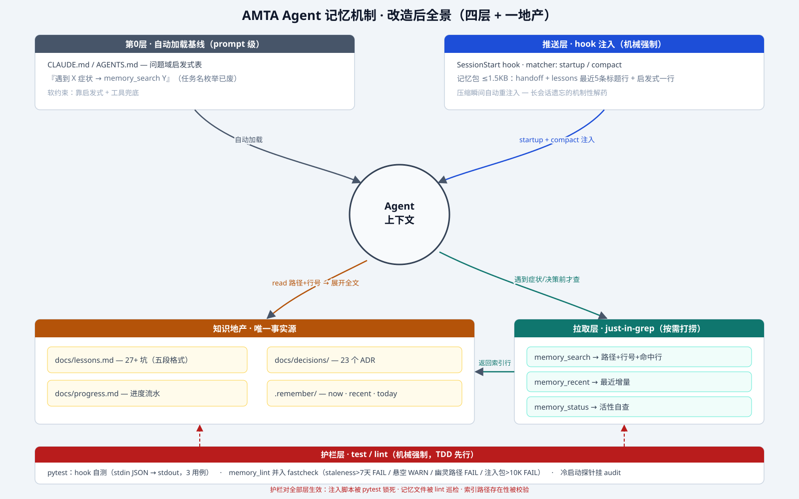

| 时机 | 层 | 发生什么 | 强制等级 |
|---|---|---|---|
| 会话启动 / resume | 第0层 基线 | CLAUDE.md、AGENTS.md 自动加载：核心事实 + 问题域启发式表（"遇到 X → 先 memory_search Y"） | prompt 级（软） |
| 会话启动（startup） | 推送层 | hook 注入记忆包 ≤1.5KB：handoff（now/recent）+ lessons 最近 5 条标题行 + 启发式一行。agent 零动作即见 | hook 级（机械） |
| 上下文压缩（compact） | 推送层 | 瘦版记忆包 ≤0.5KB 自动重注入——长会话"看两眼就忘"的机制性解药：压缩 = 记忆丢失点 = 重注入点 | hook 级（机械） |
| 工作中遇到症状 / 决策前 | 拉取层 | just-in-grep：memory_search（全知识地产正则检索，返回路径+行号+命中行）→ memory_recent（最近增量）→ 内置 read 展开全文 | 工具级（半机械） |
| 编码期 / 提交前 | 护栏层 | pytest 锁死 hook 脚本行为（stdin JSON → stdout）；memory_lint 并入 fastcheck：recent>7 天 FAIL · today 悬空 WARN · 索引幽灵路径 FAIL · 注入包>10K FAIL | test/lint 级（机械） |
| 审计期（每 2-4 周） | 护栏层 | 冷启动探针挂 audit：新会话问"上次停在哪 / 某坑怎么解"，命中即 PASS——记忆活性的定期体检 | 流程级 |
管"给多少"——token 粒度策略。信息按层级展开：索引 → 摘要 → 全文，每层只暴露让 agent 决定"要不要往下看"的最小量。
管"何时给"——时机策略。不预塞任何内容；等 agent 实际遇到问题（报错、决策、陌生流程）才现场检索。
flowchart TB
subgraph BASE["第0层 · 自动加载基线（prompt级）"]
CLAUDEMD["CLAUDE.md / AGENTS.md
问题域启发式表
『遇到X症状 → memory_search Y』"]
end
subgraph PUSH["推送层 · hook 注入（机械强制）"]
HOOK["SessionStart hook
matcher: startup / compact"]
PACK["记忆包 ≤1.5KB
handoff + lessons最近5条标题行 + 启发式一行"]
HOOK --> PACK
end
subgraph PULL["拉取层 · just-in-grep（按需打捞）"]
SEARCH["memory_search query
→ 路径+行号+命中行"]
RECENT["memory_recent
→ 最近增量"]
STATUS["memory_status
→ 活性自查"]
end
subgraph ESTATE["知识地产 · 唯一事实源"]
LESSONS["docs/lessons.md 27+坑"]
ADRS["docs/decisions/ 23 ADR"]
PROGRESS["docs/progress.md"]
REMEMBER[".remember/ now·recent·today"]
end
subgraph GUARD["护栏层 · test/lint（机械强制）"]
PYTEST["pytest: hook 自测
stdin JSON → stdout"]
LINT["memory_lint 并入 fastcheck
staleness / 悬空 / 幽灵路径 / 预算"]
PROBE["冷启动探针挂 audit"]
end
CTX(("Agent 上下文"))
CLAUDEMD --> CTX
PACK --> CTX
CTX -- "遇到症状/决策前 才查" --> SEARCH
SEARCH -- "索引行" --> CTX
SEARCH --> ESTATE
RECENT --> REMEMBER
STATUS --> LINT
CTX -- "read 路径+行号 展开全文" --> ESTATE
PYTEST -.-> HOOK
LINT -.-> ESTATE
PROBE -.-> CTX
与 research/07-agent记忆机制详报.md（一手调研与引用）配套阅读。
Q7 注入包 ≤1.5KB / compact 瘦版 ≤0.5KB Q8 三脚本：memory_search / memory_recent / memory_status（纯脚本，不建 MCP） Q9 CLAUDE.md 改问题域启发式表 + 清幽灵路径 Q10 TDD：pytest 3 用例 + linter FAIL/WARN 分级进 fastcheck Q11 .remember 维持 gitignore，多机协作再翻案
下一步：superpowers writing-plans → 新分支（自 feature/context-semantic-transfer 切出）→ 按护栏层先行的 TDD 顺序实施。